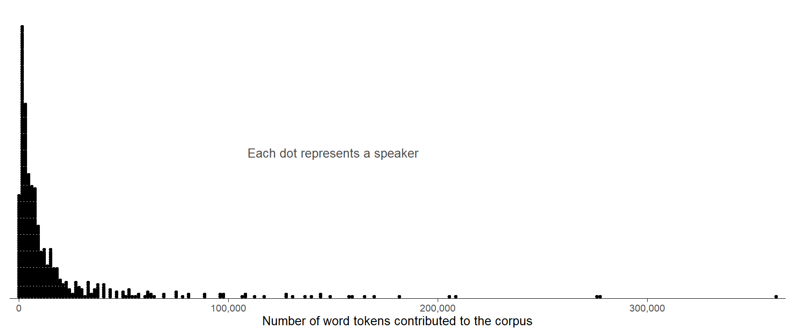
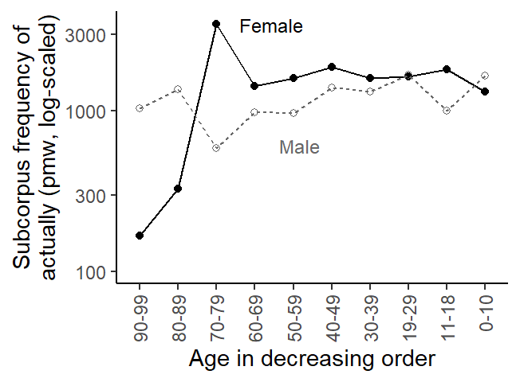
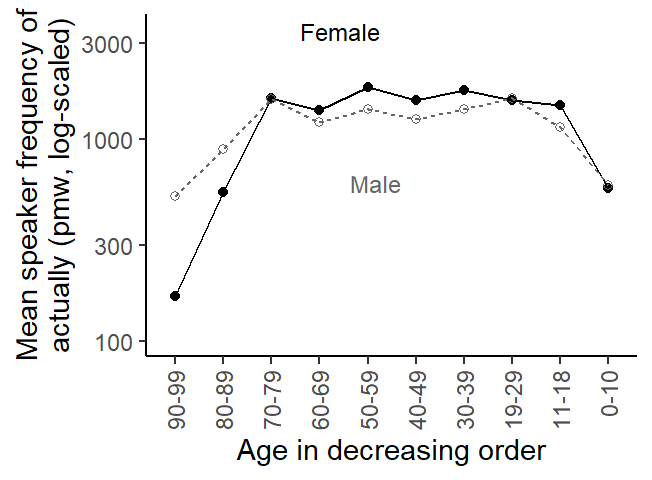
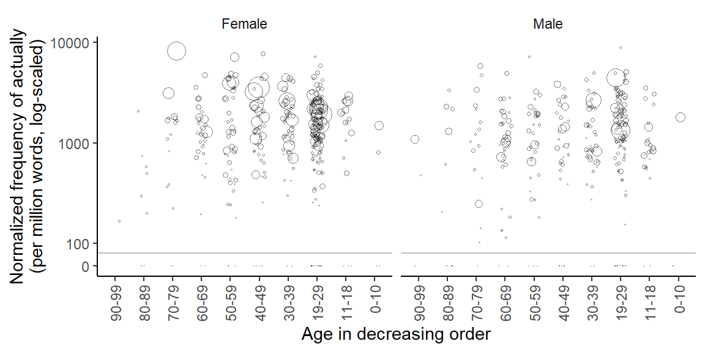

Distributional disproportions and their consequences: Speakers in the Spoken BNC2014
acoustic phonetics
vowel normalization
This blog post illustrates how the disproportionate representation of speakers in a corpus can lead to distorted results if the source of data points (i.e. the speaker ID) is not taken into account in the analysis.
Published
January 7, 2024
R setup
library(here)library(tidyverse)library(lattice)library(knitr)library(kableExtra)library(dataverse) # for downloading data from TROLLinglibrary(marginaleffects) # to compute model-based estimatessource("C:/Users/ba4rh5/Work Folders/My Files/R projects/my_utils_website.R")
Case study: Actually in the Spoken BNC2014
Our illustrative dataset records the distribution of actually in the Spoken BNC2014 [@Love_etal2017], which was analyzed in [@Soenning_Krug2022]. The question ist whether and how the usage rate of actually in conversational speech varies by Age and Sex.
Data preparation
For more information on the dataset, please refer to [@Krug_Soenning2021]. We start by downloading the data directly from TROLLing:
dat <-get_dataframe_by_name(filename ="actually_data_2014.tab",dataset ="10.18710/A3SATC",server ="dataverse.no",.f = read.csv,original =TRUE )
This dataset includes 668 speakers in total. For each individual, the data frame includes:
an ID (speaker)
the number of times they used actually (count)
their age in year, if provided in the metadata (Exact_age)
the age range (Age_range)
self-reported gender (Gender)
the total number of words contributed to the corpus by the speaker (total), and
a lightly aggregated version of Age range (age_bins)
str(dat)
'data.frame': 668 obs. of 7 variables:
$ speaker : chr "S0001" "S0002" "S0003" "S0004" ...
$ count : int 6 21 8 1 3 1 6 101 0 7 ...
$ Exact_age: int 32 NA NA NA NA NA NA 66 NA NA ...
$ Age_range: chr "30-39" "19-29" "19-29" "30-39" ...
$ Gender : chr "Female" "Female" "Female" "Male" ...
$ total : int 3000 8535 1893 3634 1449 4804 11276 139888 533 3105 ...
$ age_bins : chr "30-39" "20-29" "20-29" "30-39" ...
subset(dat, is.na(age_bins))
speaker count Exact_age Age_range Gender total age_bins
362 S0371 3 NA Unknown Male 6071 <NA>
376 S0386 8 NA Unknown Male 3034 <NA>
588 S0608 2 NA Unknown Male 1277 <NA>
589 S0609 5 NA Unknown Female 1738 <NA>
592 S0612 17 NA Unknown Female 10599 <NA>
623 S0643 2 NA Unknown Male 2461 <NA>
In line with [@Soenning_Krug2022], we remove speakers who contributed fewer than 100 words to the corpus, and for whom information on age is missing. This leaves us with n = 656 individuals.
d <- dat |>filter(total >100, Age_range !="Unknown")
Then we add a new variable to the data frame: the speaker-specific normalized frequency of actually, expressed as per million words:
d$rate_pmw <- (d$count / d$total) *1000000
Finally, we reverse the order of the levels of the categorical variable Age_range, so that they are listed in decreasing order. This is because we will interpret differences between age groups (i.e. differences in apparent time) as indicating differences in real time. The new variable is called age_group:
d <- d |>mutate(age_group =factor( Age_range, levels =rev(sort(unique(Age_range))),ordered =TRUE))
We reduce the data frame to the variables we need for analysis:
d <- d |>select(speaker, Gender, age_group, count, total, rate_pmw) |>rename(gender = Gender)
Next, we consider the distribution of speaker word counts, i.e. the number of words they contributed to the corpus. In the Spoken BNC2014, the total number of word tokens contributed by each speaker varies markedly across individuals. The following dot diagram shows the skew in this distribution: The word count ranges from 19 to 362,107 and 81% of the speakers contribute fewer than 20,000 words to the corpus.
Draw Figure
d |>ggplot(aes(x = total)) +geom_dotplot(binwidth =1500, stackratio = .75, method ="histodot") +theme_dotplot() +scale_x_continuous(labels = scales::label_comma(), expand =c(.01, .01)) +scale_y_continuous(expand =c(0, 0)) +annotate("text", x =150000, y = .5, label ="Each dot represents a speaker", color ="grey30", size =3.5) +xlab("Number of word tokens contributed to the corpus")
Warning: The `size` argument of `element_line()` is deprecated as of ggplot2 3.4.0.
ℹ Please use the `linewidth` argument instead.

Figure 1: Distribution of word counts across speakers in the Spoken BNC2014 (excluding speakers who contributed fewer than 100 words to the corpus).
What is quite interesting is that this distribution is nicely symmetric on the log scale.
Draw Figure
d |>ggplot(aes(x = total)) +geom_dotplot(binwidth = .04, method ="histodot") +scale_x_log10(labels = scales::label_comma(), expand =c(.01, .01)) +scale_y_continuous(expand =c(0, 0)) +theme_dotplot() +xlab("Number of words per speaker (log-scaled)")
Figure 2: Log-scaled distribution of word counts across speakers in the Spoken BNC2014 (excluding speakers who contributed fewer than 100 words to the corpus).
Frequency of actually: Data summary
To obtain the corpus frequency of actually, we divide the total number of actually-tokens in the corpus by the corpus size. We multiply this rate by 1,000,000 to obtain a normalized frequency of per million words:
This is very similar to the (normalized) corpus frequency reported in CQPweb [@Hardie2012]:
Corpus frequency results in CQPweb
Due to the skewed word count distribution across speaker, however, this corpus frequency is problematic. It turns out that the top 20 speakers (in terms of overall word count) account for 31% of the corpus size – together, they contribute around 350,000 words to the corpus. The corpus frequency is therefore potentially biased into the direction of the language use of these individuals.
sum(d$total >110000)
[1] 20
sum(d$total[d$total >110000]) / corpus_size
[1] 0.3081076
sum(d$total[d$total >200000]) / corpus_size
[1] 0.117284
We can consider each socio-demographic subgroup (i.e. age-by-gender combination) as a subcorpus and likewise calculate the (sub-)corpus frequency of actually. This means that we divide the total number of actually-tokens in the subcorpus by its size. We can visualize the resulting set of normalized subcorpus frequencies:
`summarise()` has grouped output by 'age_group'. You can override using the
`.groups` argument.
Warning in geom_line(bg = "white"): Ignoring unknown parameters: `fill`

Figure 3: Subcorpus frequency of actually in the socio-demographic subgroups.
Another way of estimating the average rate of actually in each subgroup is to consider the speaker-specific normalized frequencies (i.e. he variable rate_pmw) and average over these. @Egbert_Burch2023 [p. 105] refer to these two ways of measuring frequency as corpus frequency and mean text frequency. In the present context, we slightly adapt these labels to subcorpus frequency and mean speaker frequency.
`summarise()` has grouped output by 'age_group'. You can override using the
`.groups` argument.
Warning in geom_line(bg = "white"): Ignoring unknown parameters: `fill`

Figure 4: Mean speaker frequency of actually in the socio-demographic subgroups.
The frequency estimates differ considerably. Especially for 70-to-79-year-olds, the two methods yield very different usage rates. To understand why this is the case, we need to zoom in on the individual speakers. It helps to draw what is sometimes referred to as a bubble chart, where each speaker is drawn as a circle, and the size of the circles is proportional to the speaker-specific word count. The figure below arranges speakers by Gender (left panel: female speakers, right panel: male speakers) and by Age group within each panel. The y-axis shows the speaker-specific usage rate of actually, and the size of the circles reflects how many word the speaker contributed to the corpus. Note that the y-axis is log-scaled. To be able to include normalized frequencies of 0, we opted for a full scale break that is signaled by the grey horizontal lines.
Draw Figure
d |>mutate(rate_pmw_0_start =ifelse(rate_pmw ==0, 60, rate_pmw)) |>ggplot(aes(x = age_group, y = rate_pmw_0_start, size = count)) +geom_jitter(shape =1, alpha = .5, width = .2) +facet_grid(. ~ gender) +scale_y_log10(breaks =c(60, 100, 1000, 10000),label =c(0, 100, 1000, 10000)) +theme_classic_ls() +theme(legend.position ="none",axis.text.x =element_text(angle =90, vjust =0.5, hjust=1)) +scale_size_area() +geom_hline(yintercept =80, col ="grey") +xlab("Age in decreasing order") +ylab("Normalized frequency of actually\n(per million words, log-scaled)")

Figure 5: Log-scaled normalized speaker frequency of actually by Age group and Gender, with symbol size reflecting the total number of words the speaker contributed to the corpus.
We note that the subgroup of female speakers aged 70 to 79 includes a speaker with both a disproportionately high rate of actually and a disproportionately high word count. This speaker exert considerable influence on the subcorpus frequency, which is upwardly biased as a result. In the subgroup of male speakers aged 70 to 79, the speaker with the greatest word count (i.e. the largest circle) uses actually at a relatively low rate, which likewise distorts the subcorpus frequency of this group.
Frequency of actually: Statistical modeling
Let us also consider how usage rate estimates can be formed using regression modeling. Using a statistical model allows us to obtain uncertainty intervals (e.g. 95% CIs) for the subgroup estimates.
The variable we are dealing with is a count variable. This is because it consists of non-negative integers that express the number of events (here: occurrences of actually) in a certain period of observation (here: text time, i.e. the number of running words). We therefore turn to the family of count regression models.
The most basic version of this family is the Poisson model. It turns out that it returns the same frequency estimates as the subcorpus frequencies. This is because it ignores the fact that each subgroups consists of different speakers, who in turn (may) show different usage rates of actually. More specifically, is assumes that all speakers in a specific subgroup have the same underlying usage rate of actually. The assumed absence of individual variation (or inter-speaker differences) appears implausible on linguistic grounds and for the data at hand, Figure 5 shows that this assumption is indeed not tenable for the data at hand.
For a point of reference, we nevertheless start by fitting a Poisson model to the data. Since the total word count speakers differs across speakers (see Figure 1), a count regression model must include what is referred to as an offset. The idea is the same as when we calculate normalized frequencies. To be able to compare usage rates across speakers in the first place, these must be expressed in relative terms, i.e. divided by thetotal number of words produced by the speaker.
We can fit a Poisson model using the base R function glm(), where the code chunk offset(log(total)) represents the offset.
m_poi <-glm( count ~1+offset(log(total)) + gender * age_group, data = d, family =poisson())
We skip regression tables and directly proceed to the calculation of model-based estimates. To this end, we use the predictions() function in the very helpful {marginaleffects} package [@ArelBundock_etal2024]. We request estimates (i.e. predictions) for all combinations of Age (age_group) and Gender (gender), which means that we are not averaging over any predictor variables in the model. We specify these conditions (i.e. combinations of Age and Gender) using the datagrid() function. It creates a data frame of all predictor combinations of interest. Note that we must also supply a word count (total) to datagrid(); for model-based predictions, this variable controls the type of rate (or normalized frequency) returned by the predictions() function. We will stick to ‘per million words’ and therefore add total = 1e6 to the datagrid() function. If you fail to specify a value for total, the predictions() function will press ahead and use the in-sample mean of this variable (17282.57) – clearly, this is not what we want.
Two further argument require some explanation. Count regression models are generalized linear models that do not model the data on the original data scale (as is the case in ordinary linear regression). Instead, a link scale is used, similar to logistic regression models. For count regression models, the counts (or in our case: rates) are modeled on the log scale. For interpretation, however, we prefer the orginial data scale – in our case, normalized frequencies on the per-million-word scale. The predictions() function therefore includes an argumetn type, which allows us to specify the scale on which predictions should be returned. Specifying type = 'response' asks for predictions on the data scale (i.e. normalized frequencies). Unfortunately, this will also return uncertainty intervals that are computed on the data scale, i.e. after back-transformation. As you can check for yourself, this does not work well in the represent case, as some of the lower CI limits are negative (which is impossible). We therefore ask for predictions on the model scale (i.e. natural logarithms) using type = 'link' and then backtransform these to the data scale using transform = exp.
We go ahead and graph these estimates. The result is virtually identical to the descriptive Figure 3. The error bars represent 95% CIs, and we note that the Poisson model return very confident estimates for most subgroups.
Poisson model can be extended to account for the structure of the data, and for the fact that the usage rate of actually may very well vary from speaker to speaker, even within the same socio-demographic subgroup. The result is sometimes referred to as a Poisson mixture model, and it includes an extra parameter that captures the amount of observed between-speaker variation. A frequently used Poisson mixture distribution is the negative binomial distribution. For a visual explanation of this distribution, see this blog post. What matters for the present case study is the fact that this type of model knows about and adequately represents the structure of the data.
@online{2024,
author = {},
title = {Distributional Disproportions and Their Consequences:
{Speakers} in the {Spoken} {BNC2014}},
date = {2024-01-07},
url = {https://lsoenning.github.io/posts/2025-04-28_disproportionate_representation_speaker/},
langid = {en}
}